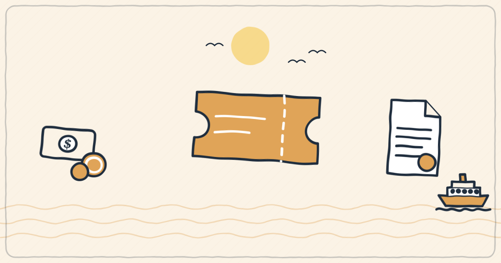

Can Cruise Prices Go Up After Booking? What Can Change
The fare itself cannot go up once your deposit is paid, however much the line raises prices for later bookers. The ticket contract does let the line pass on higher government taxes and port fees, add a fuel supplement if oil stays above a set price, and raise daily gratuities you have not prepaid. Prepaying fixes most of it.

Once your deposit is paid, the cruise fare is fixed. The line can double the price of the same cabin tomorrow and your invoice does not change. What can still move are the items around the fare: taxes and port fees, a fuel supplement the contracts reserve the right to add, gratuities you have not prepaid, and the Canadian-dollar cost of a booking made in US dollars.
What parts of a cruise price can change after you book?
| Item | Can it rise after booking? | Fix |
|---|---|---|
| Cruise fare | No, once the deposit is paid | None needed |
| Taxes, fees and port expenses | Yes; the contracts call them estimates and pass increases on, even after full payment | Allow a small margin |
| Fuel supplement | Yes, if the contract clause is triggered and the line chooses to use it | Prepay if offered; read the clause |
| Daily gratuities | Yes, if not prepaid | Prepay before the rise |
| CAD cost of a USD fare | Yes, as the rate moves | Book in CAD, or accept the float |
| Your booking after you change it | Yes, repriced at today's fare | Decide before you change |
Taxes and port fees are the change most people actually meet. If a port raises its head tax, the line can bill the difference before sailing or add it to your onboard account; Carnival's wording says so explicitly for fares already paid in full. The sums are usually a few dollars a person, and when fees fall the line refunds the difference.
Why can't the cruise line raise my fare?
Because you have a contract. The deposit turns a quote into a booking at a stated price, and the line gives up the right to charge more for the fare itself. That is why early booking pays off: you carry none of the risk of demand rising, and if the price falls before final payment most lines will reprice you down on request.
The protection starts at the deposit, not at the quote. A courtesy hold or a price in an agent's email can change until money has moved.
Good to know: the promotion you booked under is part of the deal. If the line later withdraws free gratuities or onboard credit from new bookings, yours stay attached, as long as you do not ask to be moved to a different offer.
When can a cruise line add a fuel supplement?
The clause sits in most North American ticket contracts, and it is the one item that can arrive after you have paid in full.
| Line | Trigger | Cap | Paid in full? |
|---|---|---|---|
| Royal Caribbean, Celebrity | WTI crude above US$65 a barrel, or Henry Hub gas above US$3 | Up to US$12 a guest a day | Yes; refusing to prepay can be treated as your cancellation |
| Norwegian | WTI above US$65 | Up to US$10 a guest a day | Yes, existing and new bookings |
| Carnival | Crude above US$70 | Up to US$9 a person a day in the long-standing clause; some 2026 reports say the current contract has dropped it | Yes, in the older wording |
| Princess, Holland America | Crude above US$70 | Holland America's supplement suspended, with the right to reinstate | Check your contract |
| MSC | No published trigger | Up to US$12 a day | Check your contract |
What has actually happened: oil crossed US$100 in March 2026 after the Iran conflict began and was back around that level in October, well above every trigger. Through the autumn, Royal Caribbean, Carnival and Norwegian had not billed a supplement, and Royal Caribbean's chief executive said in April there would be none on its brands in 2026. Smaller lines did act: Resorts World Cruises in Asia added up to about US$25 a day on new bookings from March, and Germany's Nicko Cruises put EUR10 a night onto a world cruise that had already sold. The big lines absorbed the cost by choice, not because the contract stops them.
Watch out: at the contract caps, a fuel supplement on a seven-night cruise for a family of four is about US$250 to US$340. If a line announces one, prepay it where the option exists.
Can gratuities go up after I book?
Yes, unless you have prepaid them. A new rate applies to anyone paying on board, whenever the cruise was booked, and 2026 was a busy year (what each line charges, and how Canadians should prepay has the current rates):
| Line | Change in 2026 | From |
|---|---|---|
| Carnival | US$16 to US$17 a day (US$18 to US$19 in suites); prepaid guests kept the old rate | 2 April |
| Princess | US$17 to US$18 (US$20 in suites); drinks and dining service charge 18% to 20% | March |
| Holland America | US$17 to US$18 (US$20 in suites); service charge also 20% | Sailings from 1 June |
| MSC | US$16 to US$17 on Caribbean and Alaska sailings | 11 May |
| Royal Caribbean, Celebrity, Norwegian | No 2026 change announced at the time of writing (US$18.50, US$18 and US$20) |
Quick math: a couple on a seven-night cruise pays US$238 at US$17 a day and US$252 at US$18. Prepaying the week a rise is announced saves the US$14.
What changes if I alter my own booking?
The line keeps its side of the deal only while the booking stays as sold. Change the ship, the date or the cabin grade and the new booking is priced at the fare on sale that day. Adding a guest prices that person at today's rate, and moving onto a new promotion can reprice the whole cabin. If you hold several cabins for a group, the dates in the group cruise deadline guide matter, because a cabin that misses a payment date is cancelled and rebooked at the current price.
A fare drop is the exception you want. Before final payment, most lines will match their own lower price; after final payment the usual answer is onboard credit or an upgrade, if anything. Ask rather than assume.
What protection do Canadian consumer laws add?
More than the ticket contract, if you book through a provincially regulated agency.
- Ontario. Under Ontario Regulation 26/05 of the Travel Industry Act, an invoice from a TICO-registered agency must state whether price increases are permitted. Where they are, it must also state that no increases are permitted after you have paid in full, and that if the total price rises by more than 7%, sales taxes excepted, you have the right to cancel and get a full refund.
- Quebec. The Office de la protection du consommateur's rules go further: an agency cannot change the price inside 30 days of departure. Before that, an increase needs a price-change clause in your contract, and is allowed only for a fuel increase imposed by the carrier or an exchange rate rise of at least 5% between signing and 45 days before the trip. An increase of 7% or more lets you ask for a refund or a comparable trip.
- The rest of Canada and the United States. No equivalent rule, so the ticket contract governs. Booking direct with the line, or through a US agency, leaves you with the contract terms alone.
For Canadians: a fare fixed in US dollars is not fixed in Canadian dollars. Paying in CAD or USD covers when the Canadian price is worth taking, and the exchange rate guide shows what a few cents on the loonie adds to a balcony booking between deposit and final payment.
Can the line cancel a booking it priced wrongly?
Yes. Royal Caribbean's and Carnival's contracts both let the line correct an obvious error after booking: ask for the intended fare, move you to a cabin matching what you paid, or cancel with a full refund. A balcony at a tenth of its normal price is not a bargain you can hold them to. The reverse case, where the line cancels the sailing, is covered in what you get back when a cruise line cancels.
Want this checked for your own sailing? A licensed cruise consultant can price it up and answer questions for free, with no obligation.
Ask a cruise expert →How to keep your cruise price where you booked it
- Book on a refundable deposit if the fare difference is small.
- Prepay gratuities the week any increase is announced.
- Buy the drinks or wifi package you know you will use while it is on sale.
- Read the fuel clause once, so a supplement, if it ever comes, is a nuisance rather than a shock.
- Check the price every couple of weeks until final payment: a fall can still work in your favour, and a rise cannot touch you.
Questions people also ask
Can a cruise line add a fuel surcharge after I have paid in full?
Under most North American ticket contracts, yes. Royal Caribbean reserves up to US$12 a person a day and Norwegian up to US$10 once West Texas crude closes above US$65 a barrel, paid in full or not. Oil spent stretches of 2026 above US$100 and the big lines still held off, but the clause remains in the contract.
Does prepaying gratuities lock in the rate?
Yes. When Carnival moved from US$16 to US$17 a day in April 2026, guests who prepaid before the change kept the old rate for any future sailing. Lines generally apply a new rate only to gratuities that have not yet been paid, so prepay as soon as a rise is announced.
What happens if the cruise line advertised the wrong price?
The contracts let the line correct an obvious pricing error even after you have booked. It can ask you to pay the intended fare, move you to a cabin that matches what you paid, or cancel the booking with a full refund. It is not obliged to honour a fare that was plainly a mistake.